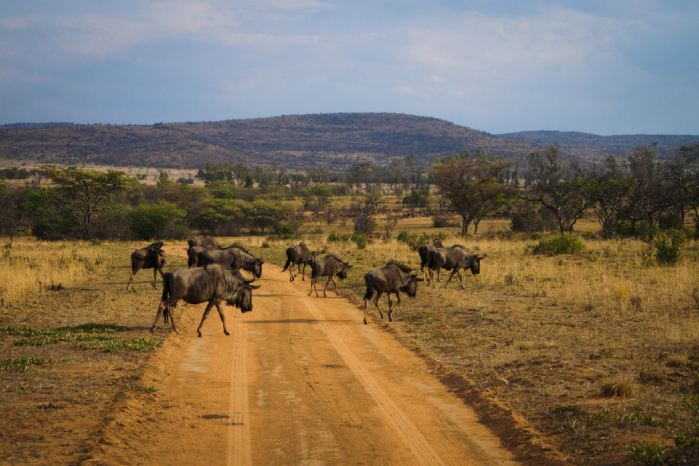
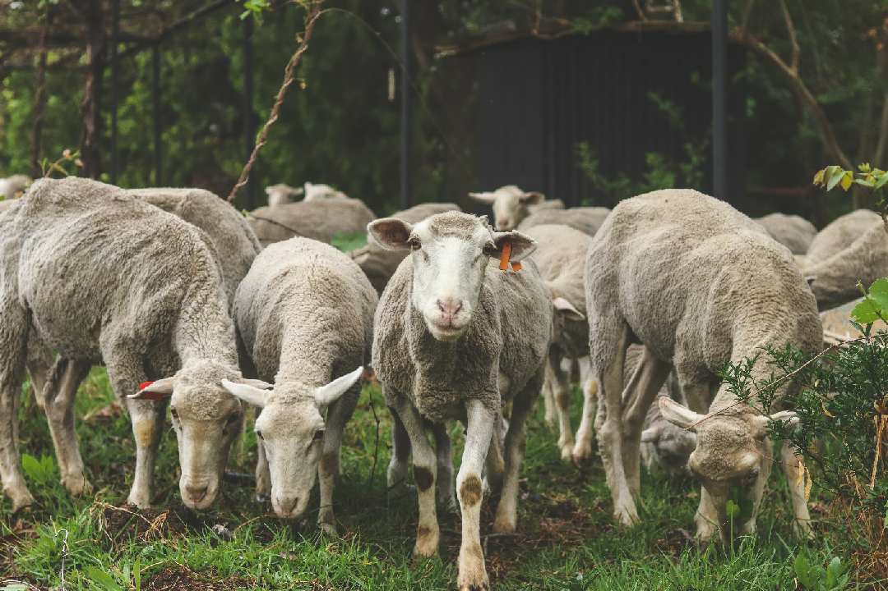

Farm Stories
Smart creativity of farm art and planning for structures that are eye catchy. Farming can also form on part of a culture, we cannot live without it too..

Farms for Sale in Christiana
Christiana is an agricultural town of about 3,000 inhabitants on the banks of the Vaal River in North West province.
Posted on March 14 2023

Poultry in North West
A good poultry farmer in North West Region will provide the birds with the right bright climate.
Posted on March 14 2023
Potchefstroom Agric
Potchefstroom went from being a quiet farming village to bustling town within 75 years. Farms for sale in Potchefstroom...
Posted on March 14 2023